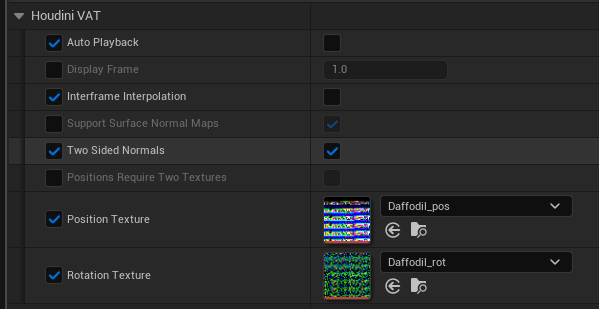
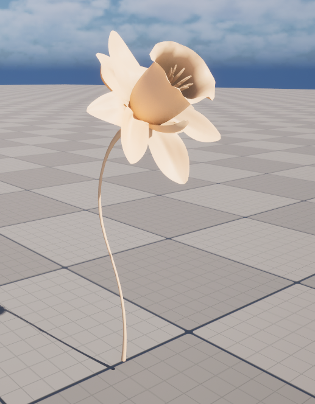
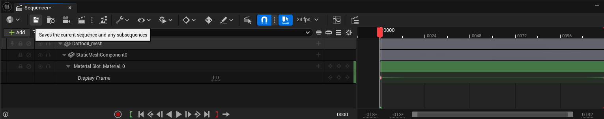
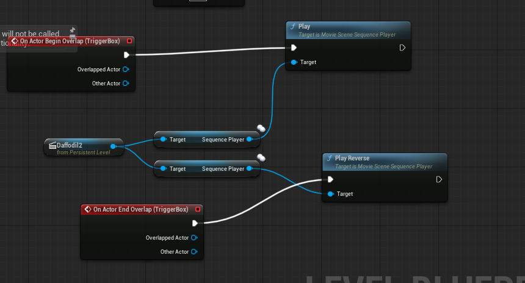

← 部落格 × Special Project | PART2


第 1 週
第 1 週計畫：
-
完成論文初稿
-
嘗試 Houdini Niagara
-
思考轉場
Houdini Niagara 測試
用 VAT 的話，粒子在 Unreal 中看起來不好，因為它們只是複製到點上的卡片。所以我試著用 Houdini Niagara 外掛，看能否得到更好的結果，並用 Itim 的泥土來測試流程。
這是教學的連結：https://youtu.be/dF7yHULxgDk?si=SoejVi2j1lb-tmBp
這是在 Unreal 中的結果。
VAT 測試
我把 Yiyi 的水仙花匯入 Unreal，遇到一些問題。首先是法線問題，法線在 Unreal 中看起來不正確。後來我發現需要在 Instance 中勾選 Two Sided Normal，法線才會在 Unreal 中正確顯示。


另一個問題是動畫看起來和 Houdini 中不一樣。我想可能是因為花瓣互相穿插，部分位置沒有被正確取得。這是 Houdini 和 Unreal 的比較。之後 Yiyi 調整了模擬，在 Houdini 中就正常了。
為了更好地控制動畫，我關掉了自動播放，讓它能在 Level Sequencer 中控制。

互動
我也試做了觸發盒（trigger box），並錯開花朵綻放的時間，讓動畫更有變化。
這是它的藍圖（Blueprint）。
